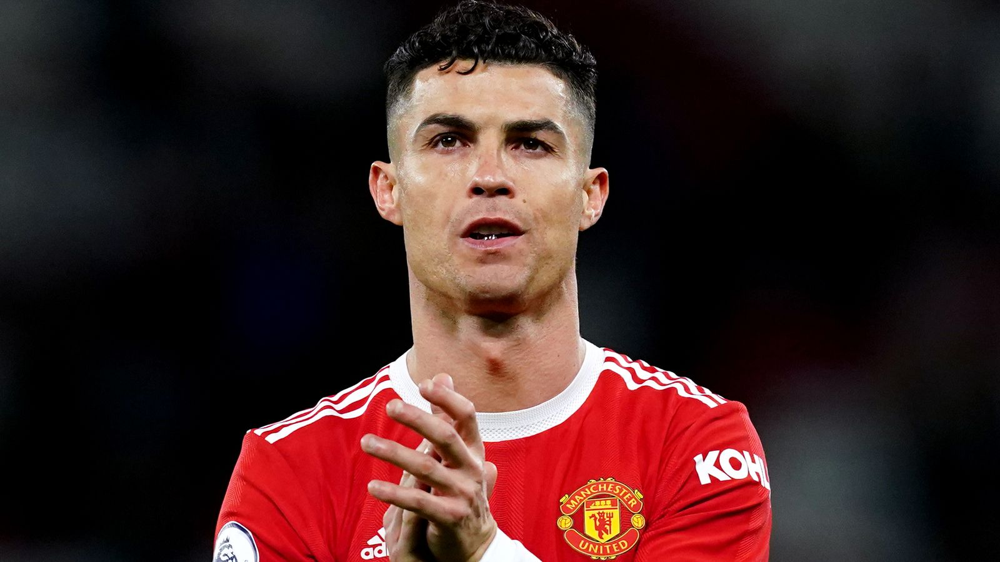

2022 Summer Transfer Farce
Desperate to flee: In the summer of 2022, with Manchester United missing the Champions League, Ronaldo immediately agitated for a move. He had his agent Mendes tout him all over Europe, the only demand being to play in the Champions League. The 37-year-old could not let go of his obsession with Europe's top stage — and instead lived out football's most embarrassing 'nobody wants me' spectacle.
Chelsea say no: The first reported link was Chelsea, where new owner Boehly was keen, but manager Tuchel firmly opposed it, judging Ronaldo a poor fit for the system and dressing room. In the end the Blues' technical team sided with Tuchel and walked away — the first door slammed in Mendes's face. A Champions League-level giant would not even enter talks.
Bayern say no: Mendes then turned to Bayern Munich, and the German giants publicly slapped him down. Bayern sporting director Kahn and board member Hoeness told the media in turn 'we are not signing Ronaldo', citing age, wages and tactical fit. Bayern fan forums even joked about 'Sad sack Ronaldo' — the moment was once excruciating.
Atlético draw the line: Most ironically, Ronaldo's camp reportedly sounded out Atlético — Real Madrid's deadly city rivals. The proposal crossed a competitive and emotional red line. Atlético's hierarchy swiftly issued a public denial and drew a hard line, with manager Simeone and the fanbase expressing strong disapproval. Joining a mortal enemy just for UCL football was slammed as having zero bottom line and zero loyalty.
Dortmund and PSG also refuse: Borussia Dortmund passed, citing age and wages; Paris Saint-Germain, with Messi, Neymar and Mbappé, were even less interested. Add Barcelona refusing on financial and image grounds, and Mendes had crisscrossed Europe's elite without a single taker — a coldness that bordered on footballing spectacle.
Forced to stay: On transfer-deadline day Ronaldo had to slink back and stay at United, reduced to a substitute several times early in the season with early-exit antics piling up. The self-proclaimed 'best in history' had become a hot potato every elite club avoided, plummeting from darling to a pariah — a contrast breathtaking in its speed.
Off to Saudi: The transfer farce ended in November when the Morgan interview blew up, United terminated his deal, and in December Ronaldo signed for Saudi Arabia's Al Nassr on a mega-deal. From clinging to the UCL dream to slumming it in an Asian league, the saga closed in the most graceless way possible — football's joke of the year.